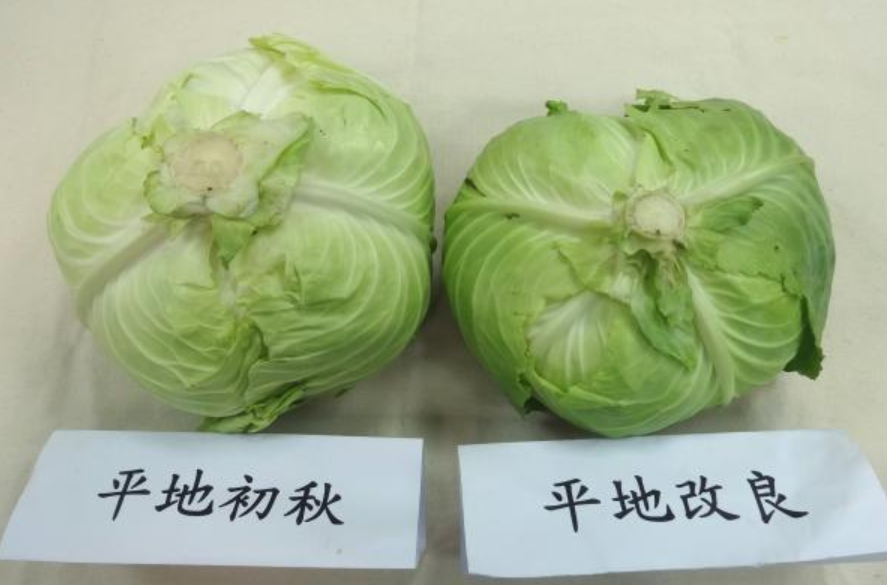

如何分辨高山高麗菜

猜猜看，哪一顆高麗菜比較好吃呢？答案是左邊那顆！為什麼？為什麼？為什麼？因為…繼續往下看囉！
左邊的高麗菜稜線明顯，右邊則不明顯。

★這兩顆高麗菜都是平地生產的，左邊的高麗菜是「初秋」品種，菜梗稜線明顯，右邊是一般改良品種，菜梗稜線較不明顯，口感與甜度以「初秋」最好吃。
平地「初秋」與改良品種整顆長這樣！ ★葉脈較細，葉面摸起來較光滑的高麗菜，口感比較好吃。

都是「初秋」品種，左邊平地生產種植，右邊為高山種植。
★原來平地種的和高山種的高麗菜真的不一樣！光外表就很好辨認，平地種的果然平平的，高山種的就長得尖尖的。雖然和氣溫有關係，也就是平地如果溫度很低，也會長得尖尖的，但一般情況，就是長成這樣。至於好吃度，當然還是高山「初秋」勝！
另外一提，平地和高山高麗菜生產季節不一樣呢！平地的約是冬天到春天，高山則約是夏天到秋天，時間分配的剛剛好。